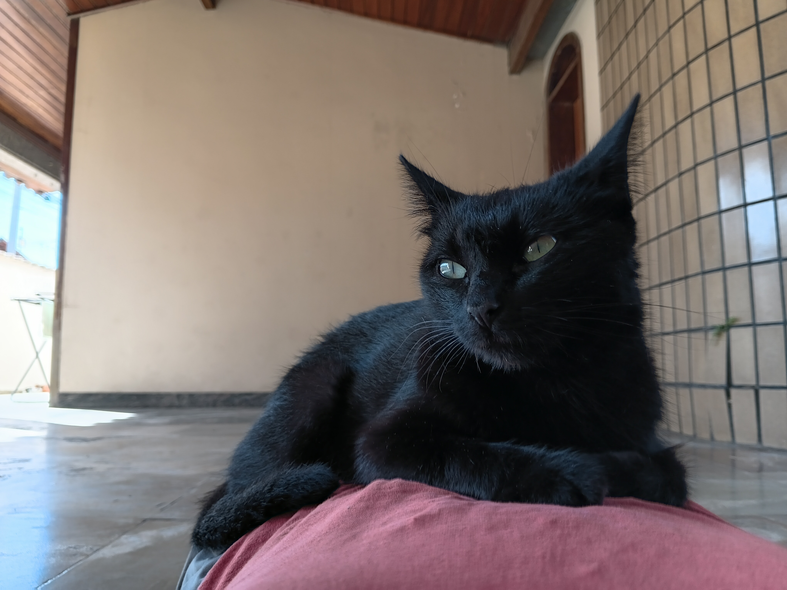
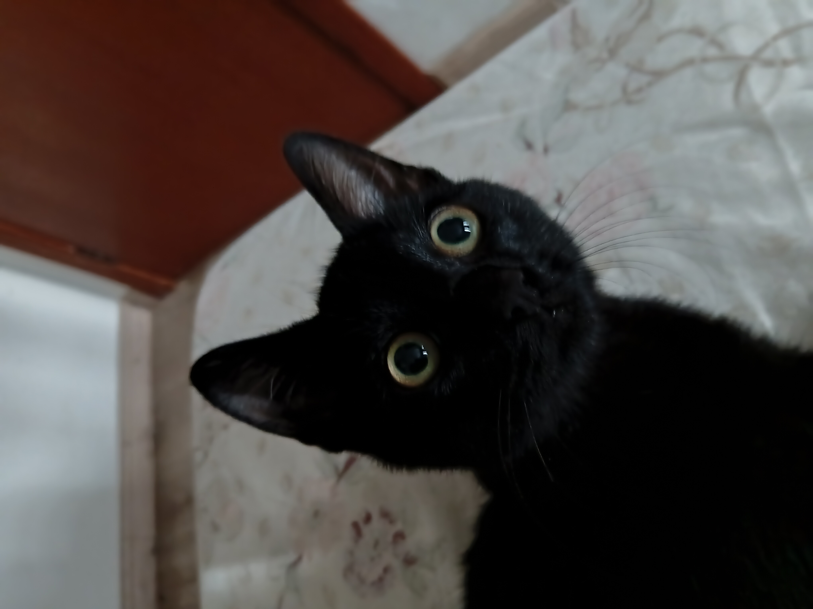
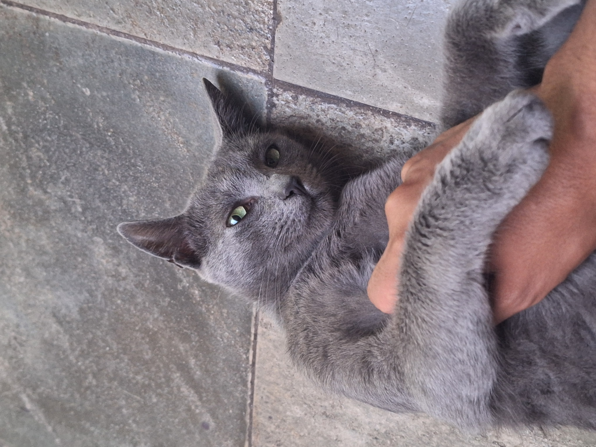

Hugo Daniel - futuro Engenheiro de Software 💻
Meu nome é Hugo Daniel e sou estudante de Engenharia de Computação 😊
Antes de escolher entrar na área, comecei minha trajetória acadêmica estudando Economia na UFMG, mas percebi na pandemia que meu amor por tecnologia falava mais alto. Foi então que decidi seguir pela computação, área que me desperta muito interesse.
Quando penso no futuro, independente da área de atuação, é muito difícil imaginar um impacto pequeno da computação. Sempre quis trabalhar em algo que fosse próximo da vanguarda -- criar coisas novas através da programação se encaixa bem nisso...
Dentro da computação, tenho bastante interesse pelo desenvolvimento (de qualquer tipo) e por inteligência artificial. Os temas de cybersegurança e ciência de dados também é uma área que considero bastante interessante e que gostaria de conhecer melhor ao longo da minha formação.
Fora da faculdade, gosto de manter uma rotina com diferentes hobbies. Assistir futebol (torço pro Arsenal), jogar bola ⚽, tocar meus instrumentos 🎸 e cantar 🎤-- atividades que fazem parte do meu dia a dia e são uma boa forma de passar o tempo longe dos estudos.
E, claro, não poderia deixar de falar dos meus três companheirinhos aí da das fotos. Os três simplesmente brotaram na minha vida das formas mais aleatórias possíveis. O Tom nasceu no jardim externo da minha casa, depois que a mãe dele resolveu escolher aquele lugar para dar à luz. A Banguela apareceu toda ensopada na prota de casa em uma noite de chuva torrencial, quando alguns vizinhos bateram na nossa porta perguntando se ela era nossa. Ela chegou pequenininha, molhada e assustada, acabou dormindo no meu quarto e nunca mais foi embora. Já o Bruce foi encontrado sozinho, andando pelo meio-fio em frente de casa. Sem mãe ou dono por perto, nós o resgatamos e ele também acabou ficando. No fim das contas, os três foram chegando de maneiras inesperadas, mas todos acabaram encontrando um lar aqui ❤️
Meus companheiros 🐈


